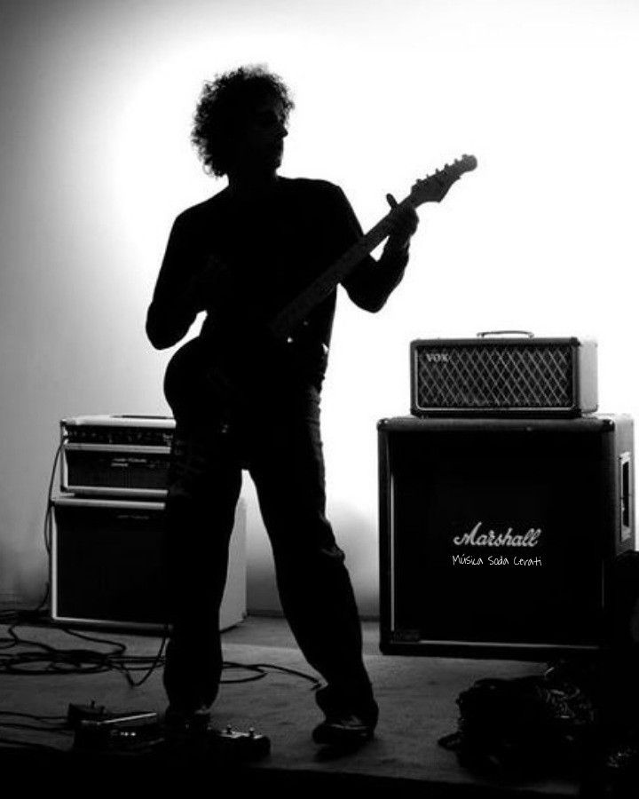

Blue's · Juego musical
Adivina la Emoción
Escucha una canción del repertorio de Blue's y descubre qué emoción transmite.




Reglas del juego
- Tienes 30 segundos para adivinar qué emoción transmite la canción según Blue's.
- Elige una emoción entre Tranquilo, Alegre, Ansioso, Triste y Amor.
- Con 3 respuestas malas , pierdes la partida.
- Con 3 aciertos, ganas y desbloqueas el premio.
← Volver al Home
Partida en juego
Blue's · Juego musical
Adivina la Emoción
Escucha el tema, identifica la emoción que representa en Blue's y responde antes de que se acabe el tiempo.
Escucha el fragmento
Pulsa reproducir en Spotify y escucha con atención.
Emoción oculta
Tiempo: 30s
¿Qué emoción representa esta canción?